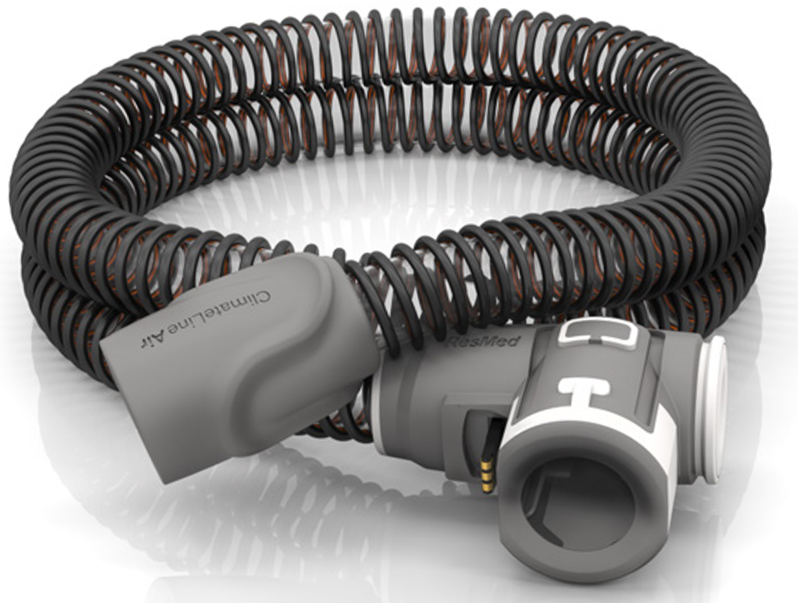

The ClimateLineAir™ is heated air tubing that delivers the desired temperature at your mask. ClimateLineAir Oxy is a variant of the ClimateLineAir that has a built-in oxygen connector to attach a supplemental oxygen supply.
When used with the HumidAir™ humidifier, ClimateLineAir heated air tubing allows you to use Climate Control. Climate Control is designed to make therapy more comfortable by enabling constant temperature and maintaining humidity.
The ClimateLineAir heated air tubing is designed for use with AirSense™ 10 / AirCurve™ 10 and Lumis™ devices. Please read this entire user guide together with your device user guide before using your ClimateLineAir heated air tubing.
If this is your first time using your ClimateLineAir heated air tubing, we recommend starting with:
Use the navigation menu to access different sections, or visit the Contents page for a complete overview of all available sections.